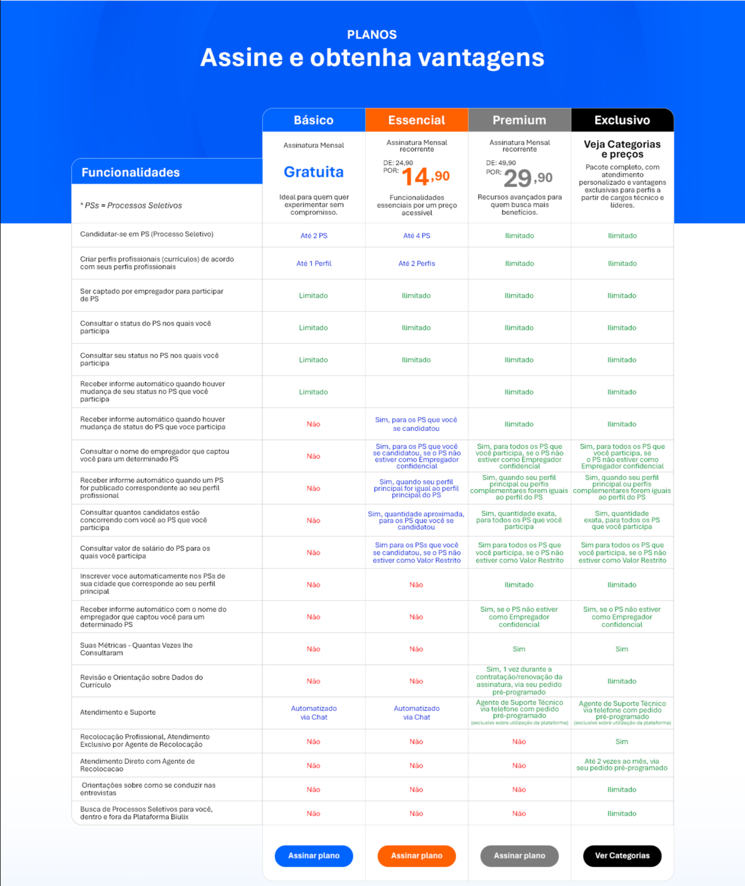

Conectando talentos e negócios!
Redução de custosAmpla base de dados
Filtros de buscas personalizados
Acelere seu processo de contratação
Processos de seleção por equipes de demandantes
Simplifique sua busca por talentos e preencha suas vagas com assertividade
Encontre os talentos que você precisa
Processos estruturados e alinhados com LGPD
Melhor custo-benefício
SOBRE NÓS
A Biulix tem como personalidade ser tecnológica, profissional, eficiente, barata e colaborativa.
Temos foco em conectar empregadores aos talentos mais adequados, simplificando os processos de seleção de pessoal.
Oferecemos aos empregadores, plataforma de currículo e gestão de processos seletivos estruturados, com assinatura gratuita e opcionalmente assinatura paga.
Os empregadores podem buscar talentos, criar e gerenciar gratuitamente seus processos seletivos com facilidade e agilidade.
Com os Agentes de Seleção credenciados pela plataforma, o empregador pode optar por delegar todo o processo seletivo ao agente, que realizará o serviço de seleção e apresentará os candidatos recomendados para validação.
Conectamos candidatos ao seu negócio, para diversas áreas de atuação.
A Biulix tem como personalidade ser tecnológica, profissional, eficiente, barata e colaborativa.
Temos foco em conectar empregadores aos talentos mais adequados, simplificando os processos de seleção de pessoal.
Oferecemos aos empregadores, plataforma de currículo e gestão de processos seletivos estruturados, com assinatura gratuita e opcionalmente assinatura paga.
Os empregadores podem buscar talentos, criar e gerenciar gratuitamente seus processos seletivos com facilidade e agilidade.
Com os Agentes de Seleção credenciados pela plataforma, o empregador pode optar por delegar todo o processo seletivo ao agente, que realizará o serviço de seleção e apresentará os candidatos recomendados para validação.
Como funciona a Conta Empregador
Agente de Seleção
Opcionalmente você poderá demandar serviços de seleção de pessoal através dos Agentes credenciados pela plataforma.
